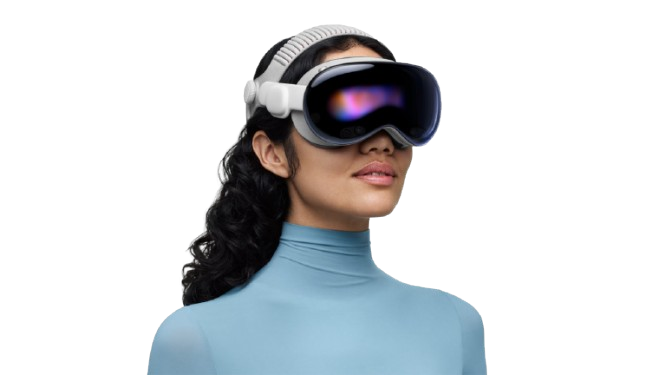
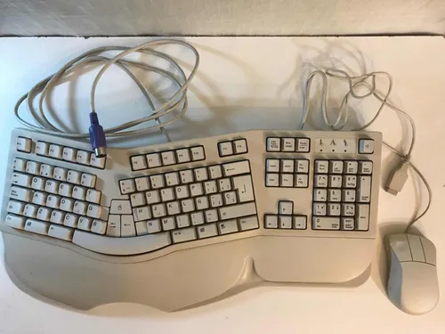
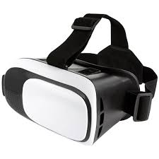
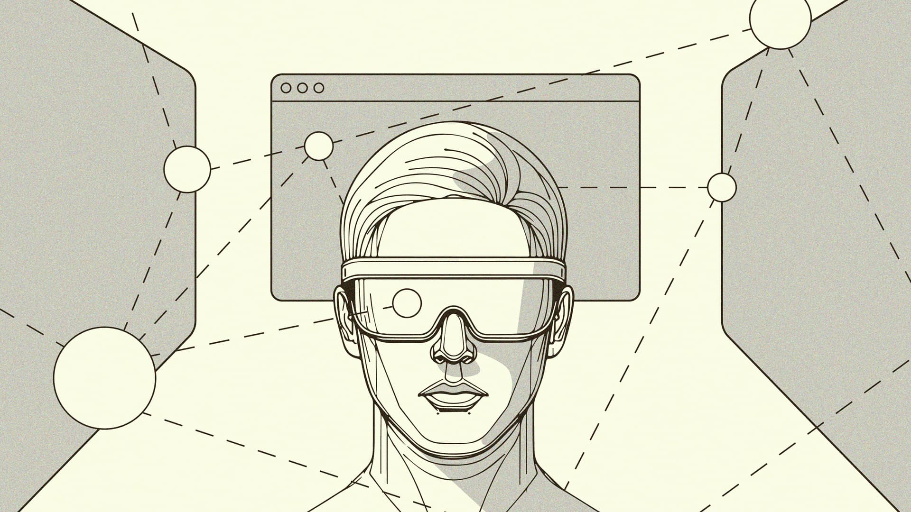
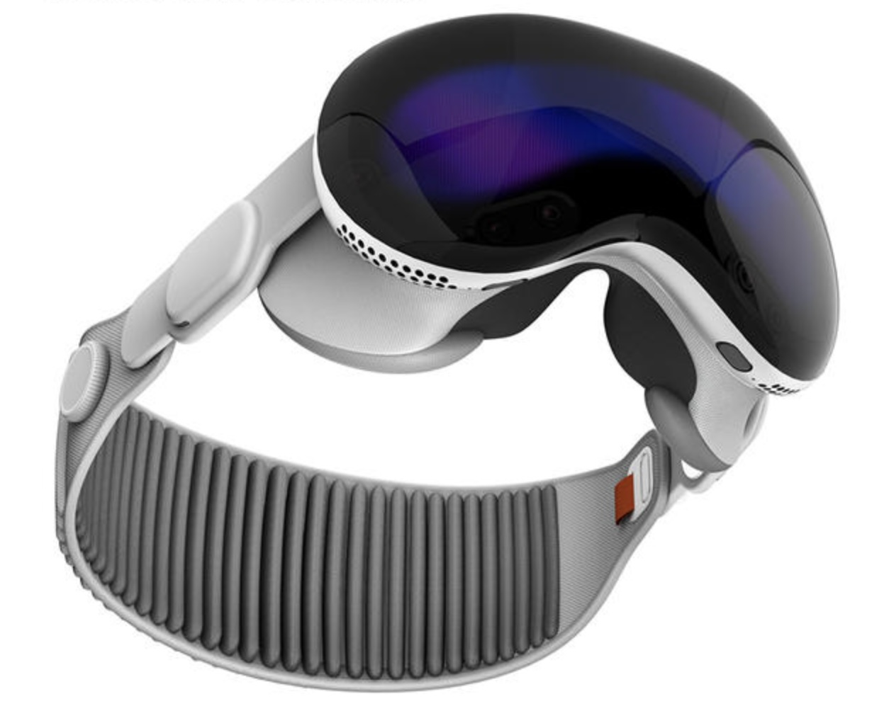
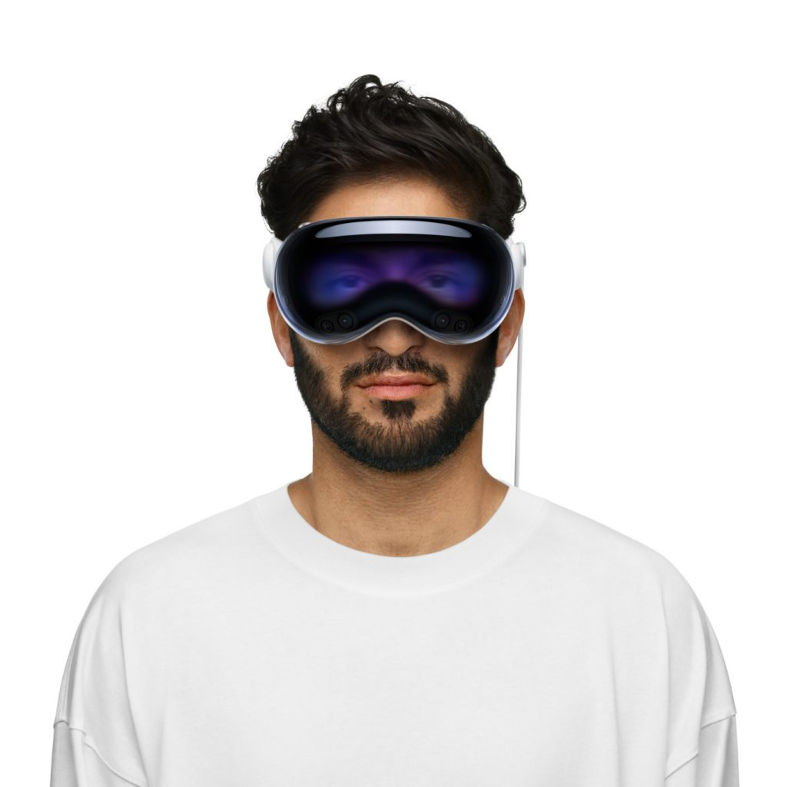

Apple Vision Pro es un visor de computación espacial que combina
realidad aumentada y realidad virtual para permitir la interacción con interfaces
digitales mediante seguimiento ocular, gestos de las manos y voz.
Está directamente relacionado con la Interacción Persona-Ordenador porque propone un
modelo de entrada y salida inmersivo donde el usuario manipula elementos sin
dispositivos físicos tradicionales. Además, integra el contenido digital en el campo
de visión del usuario, reconoce su presencia en el entorno y responde en tiempo real
a su atención, convirtiendo al cuerpo (mirada, manos y postura) en el principal
dispositivo de control. Este cambio redefine cómo diseñamos interfaces y plantea
nuevos retos en ergonomía, accesibilidad y gestión de la carga cognitiva dentro de IPO.

Beneficios clave:
Interacción natural: el usuario selecciona con la vista y confirma con gestos simples. Disminuye la carga cognitiva al reducir pasos intermedios.
Contexto inmersivo: mezcla contenido digital con el entorno físico para aumentar presencia y enfoque.
Accesibilidad: entradas multimodales (ojos, manos, voz) que se adaptan a diferentes capacidades.
Productividad espacial: ventanas y apps flotantes se organizan alrededor del usuario, ampliando el espacio de trabajo.
Nuevos patrones de diseño: profundidad, escala, oclusión y feedback háptico/visual en 3D.
Evolución y dispositivos que sustituye

1960–1980
Teclado y ratón
Entradas discretas sobre superficies planas. Preciso, pero alejado del mundo físico.
2007–2015
Multi-touch móvil y tablets
Manipulación directa más intuitiva, aunque aún limitada a una pantalla 2D.

2016–2022
Visores VR/AR
Experiencias inmersivas, a menudo dependientes de mandos físicos y menos integradas en tareas cotidianas.

2024
Computación espacial
Prioriza ojos, manos y voz; sustituye o complementa monitor, ratón y teclado, mejorando seguimiento ocular y anclaje espacial.
Fotos

Visor de realidad mixta usado para experiencias inmersivas.

Gestos de manos como método de selección y confirmación.Contenido digital integrado en el espacio físico.